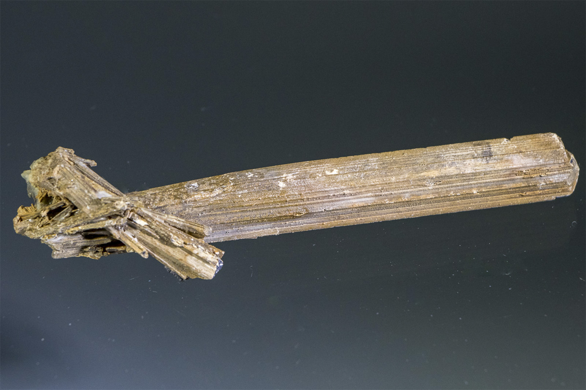

Partial pseudomorph: Stibiconite replacing Stibnite
"Stibiconite After Stibnite"
IV-00072
Unassigned
Purchased 4/23/2001 from Natural Wonders for $3.79
Core Collection • In Collection
Details
Storage Type: Flat
Storage Location: 004 Oxides & Hydroxides 01
Size class: Cabinet (0)
Dimensions: 12.2 × 3.1 × 2.5 cm
Mass: 40 g
Luster: Unrecorded